Создаём книги — о вас о вашем ребёнке о вашей паре о близком человеке о вас
Вы задаёте один вопрос — мы отвечаем целой книгой.
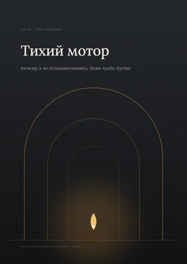
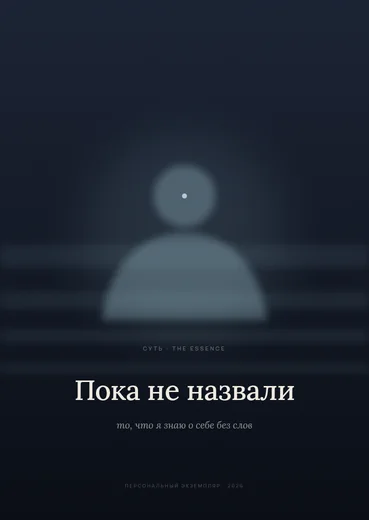
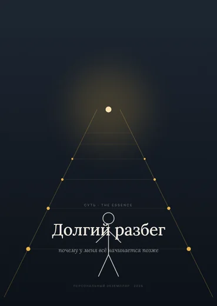
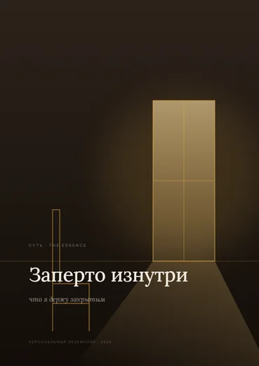
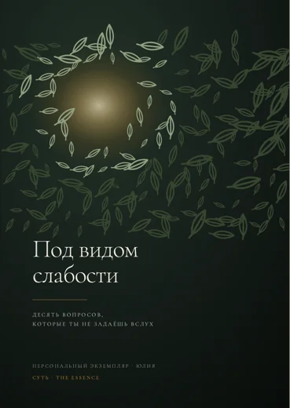
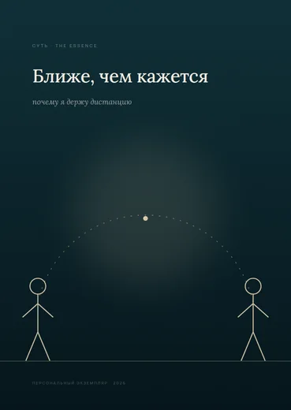
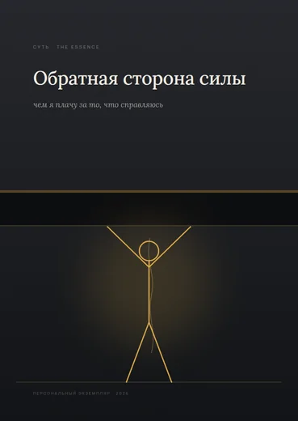
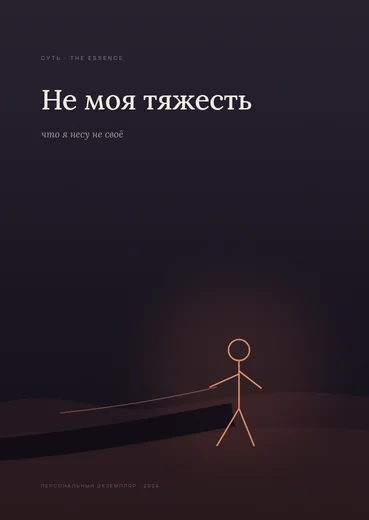
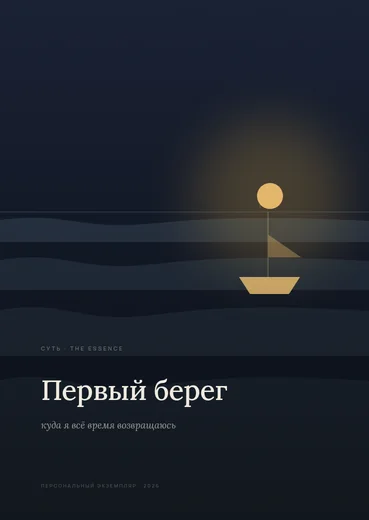
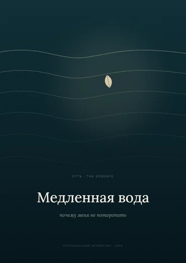
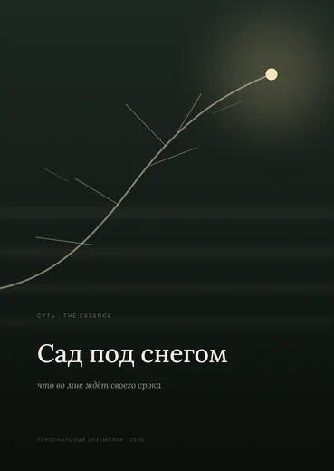
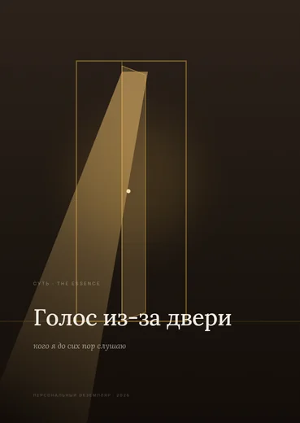
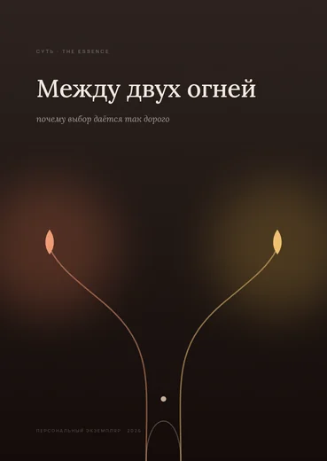
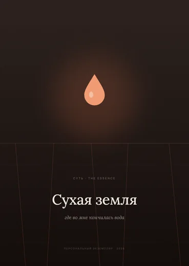
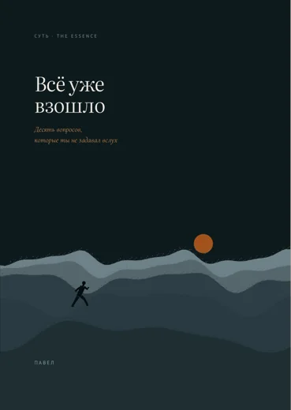
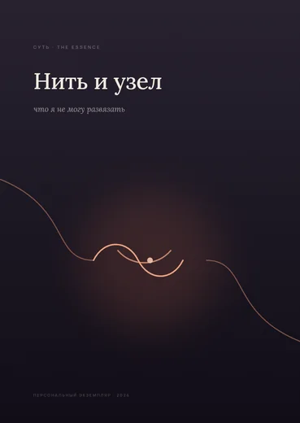
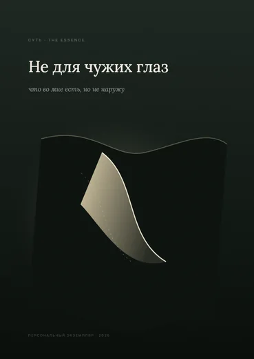
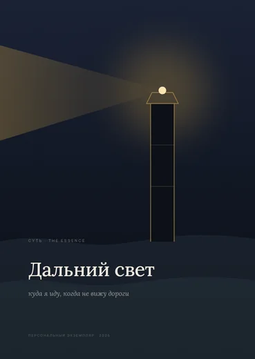
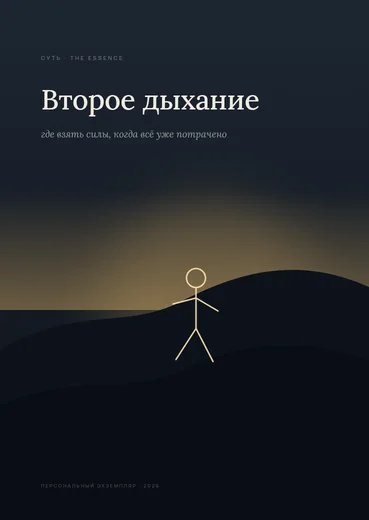
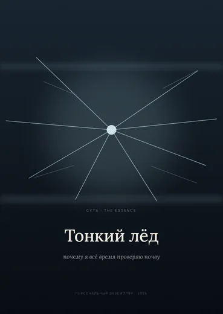
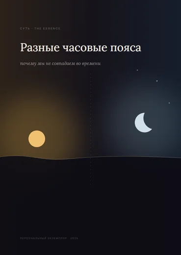
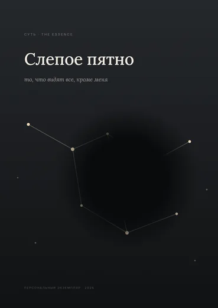
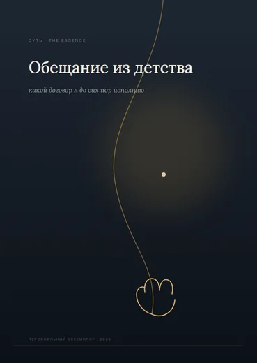
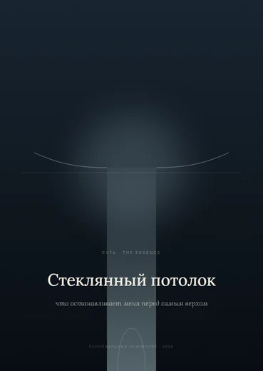
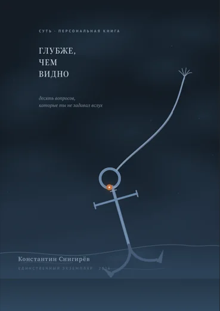
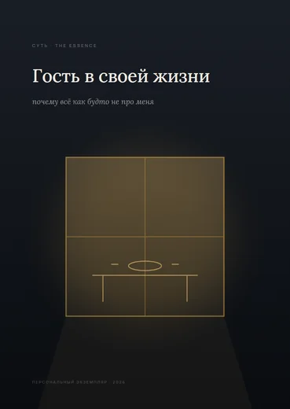
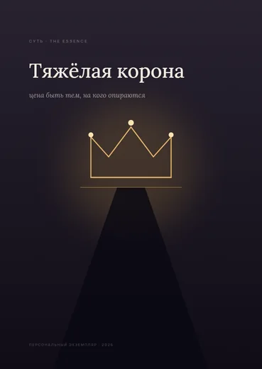
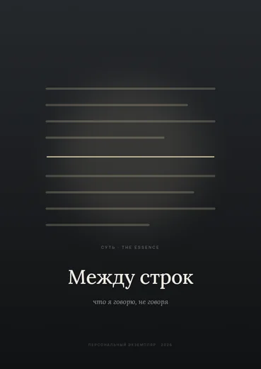
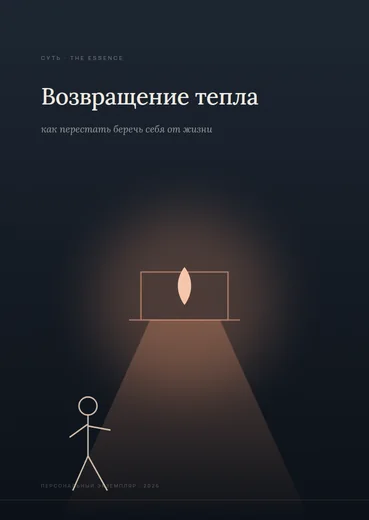
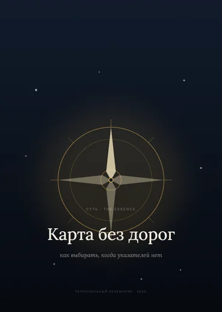
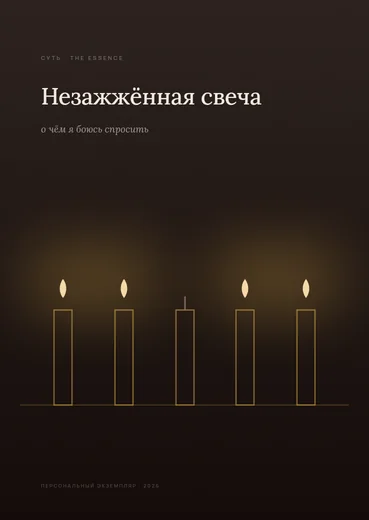
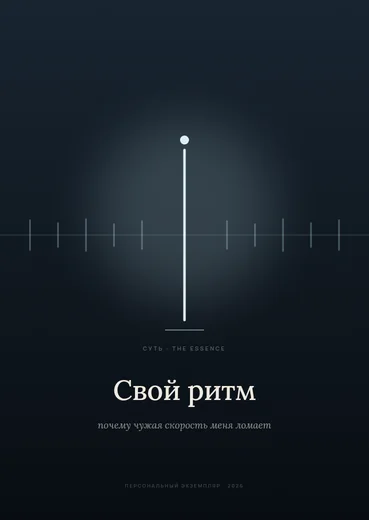
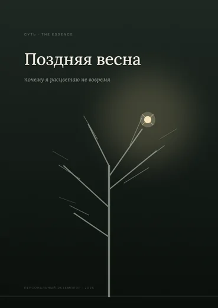
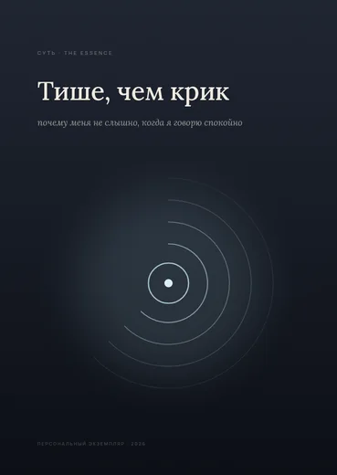
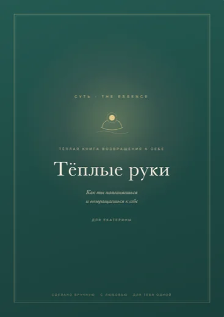
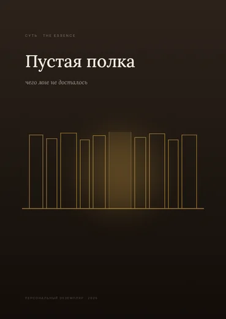
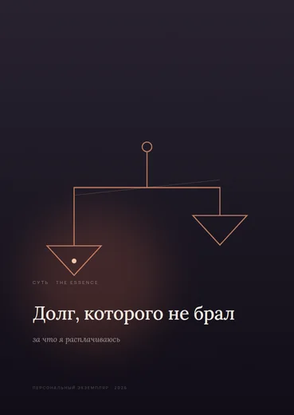
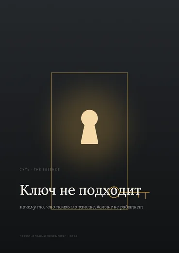
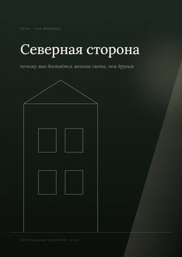
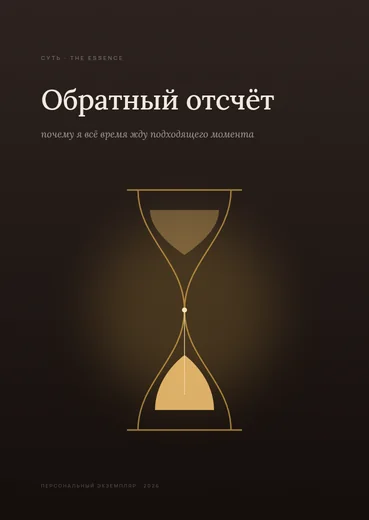
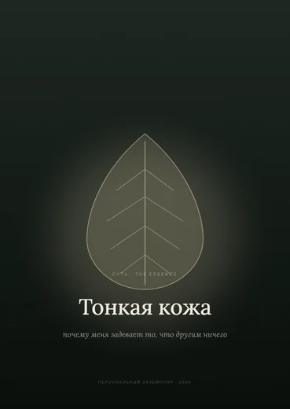
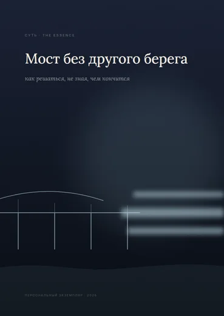
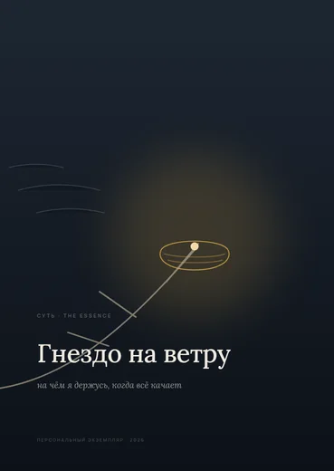
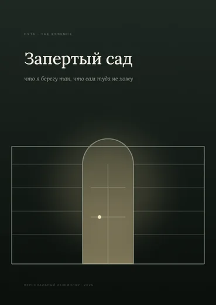
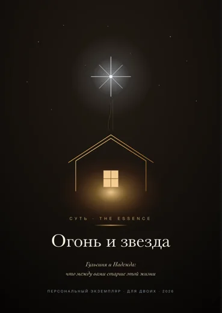
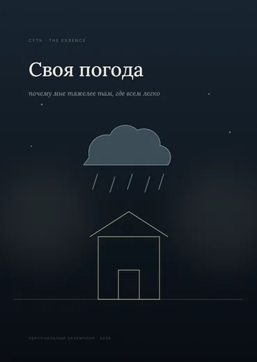
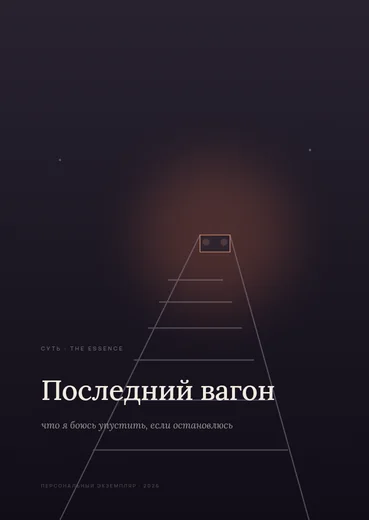
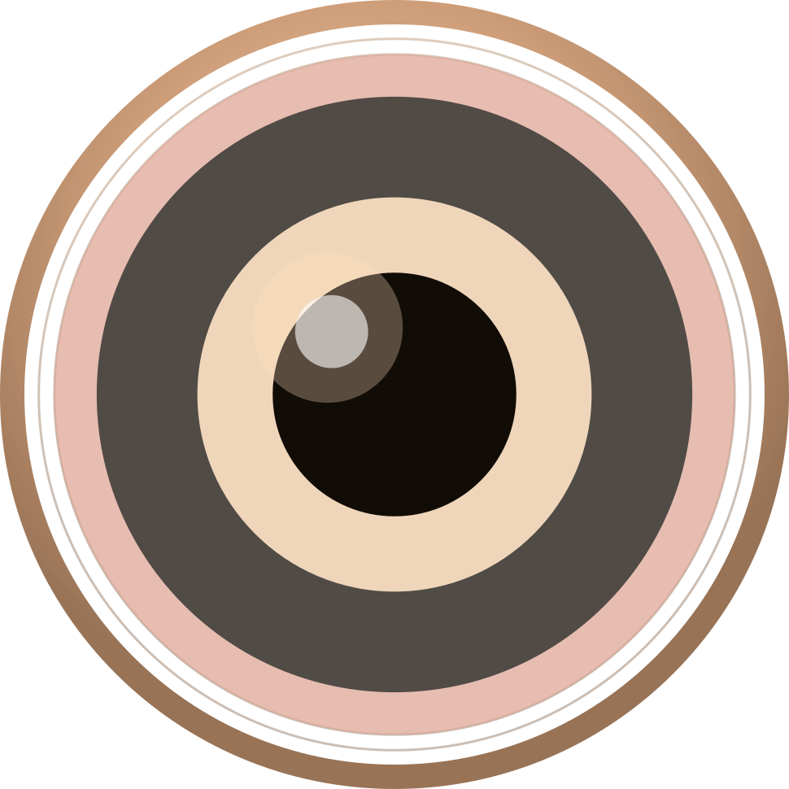
Суть · The Essence Сайт в разработкеВы задаёте один вопрос — мы отвечаем целой книгой.